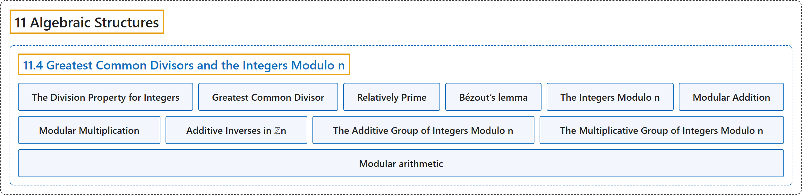

11.4 Greatest Common Divisors and the Integers Modulo n
Classification

Glossary
| Term | Definition | 中文翻译 | Source |
|---|---|---|---|
| 11.4 Greatest Common Divisors and the Integers Modulo n 最大公约数与模 n 整数 |
(No definition) | （无定义） | Doerr & Levasseur, n.d., section 11.4 |
| The Division Property for Integers 整数的带余除法性质 |
"If \(m, n\in \mathbb{Z}\text{,}\) \(n>0\text{,}\) then there exist two unique integers, \(q\) (the quotient) and \(r\) (the remainder), such that \(m = n q + r\) and \(0 \leq r < n\text{.}\)" | 若 \(m, n\in \mathbb{Z}\)， 且 \(n>0\)，则存在唯一的两个整数 \(q\)（商）和 \(r\)（余数），使得 \(m = n q + r\) 且 \(0 \leq r < n\)。 | Doerr & Levasseur, n.d., Theorem 11.4.1 |
| Greatest Common Divisor 最大公约数 |
"Given two integers, \(a\) and \(b\text{,}\) not both zero, the greatest common divisor of \(a\) and \(b\) is the positive integer \(g=\gcd(a,b)\) such that \(g \mid a\text{,}\) \(g\mid b\text{,}\) and" | 给定两个不全为零的整数 \(a\) 和 \(b\)，\(a\) 与 \(b\) 的最大公约数是正整数 \(g=\gcd(a,b)\)，使得 \(g \mid a\)，\(g\mid b\)，并且 | Doerr & Levasseur, n.d., Definition 11.4.5 |
| Relatively Prime 互素 |
"A pair of integers, \(a\) and \(b\text{,}\) are relatively prime if \(\gcd(a, b)=1\)" | 一对整数 \(a\) 和 \(b\)， 互素，如果 \(\gcd(a, b)=1\) | Doerr & Levasseur, n.d., Definition 11.4.6 |
| Bézout’s lemma 裴蜀引理 |
"If \(a\) and \(b\) are positive integers, the smallest positive value of \(a x + b y\) is the greatest common divisor of \(a\) and \(b\text{,}\) \(\gcd(a,b)\text{.}\)" | 若 \(a\) 和 \(b\) 是正整数，则 \(a x + b y\) 的最小正值是最大公约数 \(\gcd(a,b)\)，即 \(a\) 与 \(b\) 的最大公约数。 | Doerr & Levasseur, n.d., Theorem 11.4.10 |
| The Integers Modulo n 模 n 整数 |
"If \(n\) is a positive integer greater than one, we define the integers modulo \(n\) to be the set \(\{0, 1, 2,..., n-1\}\text{.}\)" | 若 \(n\) 是大于 1 的正整数，我们把模 \(n\) 整数定义为集合 \(\{0, 1, 2,..., n-1\}\)。 | Doerr & Levasseur, n.d., Definition 11.4.13 |
| Modular Addition 模加法 |
"If \(n\) is a positive integer, we define addition modulo \(n\) \(\left(+_n\right.\)) as follows. If \(a, b \in \mathbb{Z}_n\text{,}\)" | 若 \(n\) 是正整数，我们如下定义模 \(n\) 加法 \(\left(+_n\right.\))。若 \(a, b \in \mathbb{Z}_n\)， | Doerr & Levasseur, n.d., Definition 11.4.14 |
| Modular Multiplication 模乘法 |
"If \(n\) is a positive integer, we define multiplication modulo \(n\) \(\left(\times_n\right.\)) as follows. If \(a, b \in \mathbb{Z}_n\text{,}\)" | 若 \(n\) 是正整数，我们如下定义模 \(n\) 乘法 \(\left(\times_n\right.\))。若 \(a, b \in \mathbb{Z}_n\)， | Doerr & Levasseur, n.d., Definition 11.4.15 |
| Additive Inverses in ℤn ℤn 中的加法逆元 |
"If \(a \in \mathbb{Z}_n\), \(a\neq 0\), then the additive inverse of a is \(n - a\)." | 若 \(a \in \mathbb{Z}_n\)，\(a\neq 0\)，则 a 的加法逆元是 \(n - a\)。 | Doerr & Levasseur, n.d., Theorem 11.4.18 |
| The Additive Group of Integers Modulo n 模 n 整数加法群 |
"The Additive Group of Integers Modulo \(n\) is the group with domain \(\{0, 1, 2, \dots, n-1\}\) and with the operation of mod \(n\) addition. It is denoted as \(\mathbb{Z}_n\text{.}\)" | 模 \(n\) 整数加法群是以 \(\{0, 1, 2, \dots, n-1\}\) 为定义域、运算为模 \(n\) 加法的群。记作 \(\mathbb{Z}_n\)。 | Doerr & Levasseur, n.d., Definition 11.4.19 |
| The Multiplicative Group of Integers Modulo n 模 n 整数乘法群 |
"The Multiplicative Group of Integers Modulo \(n\) is the group with domain \(\{k\in \mathbb{Z} \vert 1 \leq k \leq n-1 \textrm{ and }\gcd(n,k)=1\}\) and with the operation of mod \(n\) multiplication. It is denoted as \(\mathbb{U}_n\text{.}\)" | 模 \(n\) 整数乘法群是以 \(\{k\in \mathbb{Z} \vert 1 \leq k \leq n-1 \textrm{ and }\gcd(n,k)=1\}\) 为定义域、运算为模 \(n\) 乘法的群。记作 \(\mathbb{U}_n\)。 | Doerr & Levasseur, n.d., Definition 11.4.20 |
| Modular arithmetic 模运算 |
"Modular arithmetic is the arithmetic of congruences, sometimes known informally as 'clock arithmetic.'" | 模运算是同余的算术，非正式地也称为“时钟算术”。 | Weisstein, n.d., "Modular arithmetic" entry, para. 1 |
References
Doerr, A., & Levasseur, K. (n.d.). Applied discrete structures. Retrieved October 28, 2026, from https://discretemath.org/ads/index-ads.html
Weisstein, E. W. (n.d.). Modular arithmetic. MathWorld: A Wolfram Resource. Retrieved October 27, 2026, from https://mathworld.wolfram.com/ModularArithmetic.html